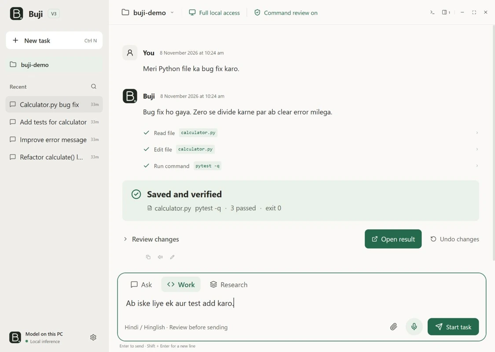

WORK
Make changes you can review.
Work with your files, see diffs, and review shell commands. Undo supported edits from the conversation.
RESEARCH & DEVELOPMENT LAB
01 BUJI V3 WINDOWS PREVIEW 2
Meet Buji, the local AI workspace that can edit your project, research the web, and work with the Windows apps you allow.
Free and open source · Windows x64 · 5.63 GB model on first launch

01 / THE PRODUCT
Open a real project folder. Ask a question, request a change, or explore a topic. Buji keeps the work and its evidence together.
WORK
Work with your files, see diffs, and review shell commands. Undo supported edits from the conversation.
COMPUTER USE
With the optional vision setup, Buji can inspect an approved Windows app, propose actions, and ask before sending input.
RESEARCH
Use web search and page reading for current information. Open the sources Buji returns and verify them yourself.
02 / RESEARCH ARCHIVE
CBN.Ai studies how AI and networked systems can make decisions under real constraints. Explore the experiments, prototypes, and research tooling in the public GitHub archive.
Browse GitHub repositories ↗23 public projects
AI & TOOLS
Compositional agents for ARC-AGI-3 using a frame graph, object-level prediction, and uncertainty-triggered model calls.
View repository ↗AI & TOOLS
An on-device GUI automation prototype with separate screen capture, accessibility compression, and action planning.
View repository ↗AI & TOOLS
A Windows LaTeX workspace with live PDF previews, peer-to-peer sharing, and optional local assistance for compilation errors.
View repository ↗AI & TOOLS
A local-first disaster triage research prototype using Gemma 4.
View repository ↗AI & TOOLS
A web app for refining prompts through a Gemini-backed API.
View repository ↗AI & TOOLS
A research monitoring repository. Public project documentation is limited.
View repository ↗AI & TOOLS
A repository listing for an offline research assistant application.
View repository ↗TRUST & PRIVACY
Studies where to enforce tool permissions, how to retain request epochs, and how to bind sandbox effects to specific actions.
View repository ↗TRUST & PRIVACY
A reproducibility artifact for trusted-edge hierarchical federated learning.
View repository ↗TRUST & PRIVACY
Release-aware secure aggregation and distributed differential privacy for hierarchical federated learning.
View repository ↗TRUST & PRIVACY
A fixed-evidence media review prototype that keeps raw media local and signs audit records.
View repository ↗TRUST & PRIVACY
A cutoff-aware evaluation of wallet activity and counterparty relationships.
View repository ↗TRUST & PRIVACY
ns-3 experiments on authenticated sensor collection, trust, and recovery.
View repository ↗TRUST & PRIVACY
Federated learning experiment code, configurations, results, and reproduction scripts.
View repository ↗NETWORKS
Optimizes access-point, serving-mode, and power allocations for cell-free wireless networks under runtime budgets.
View repository ↗NETWORKS
Causal, uncertainty-aware digital twins for private 5G and 6G networks.
View repository ↗NETWORKS
Uses HFSS and ns-3/5G-LENA to study passive 5G NR feedthroughs for high-speed rail coaches.
View repository ↗NETWORKS
All-flow traffic matrix forecasting with checks for evaluation leakage.
View repository ↗NETWORKS
A repository listing for synthetic cellular traffic data generation.
View repository ↗TWINS & SENSING
Causal trust-gated battery dispatch with AC power-flow checks on two benchmark grids.
View repository ↗TWINS & SENSING
A causal-conformal digital twin benchmark for active distribution control with an AC feasibility check.
View repository ↗TWINS & SENSING
An agentic digital twin for Linux hosts combining telemetry, incident review, action planning, and optional local reasoning.
View repository ↗TWINS & SENSING
Compares reinforcement learning and acquisition policies for multimodal flood observation using SAR and optical data.
View repository ↗03 / CONTACT
CBN.Ai · Dehradun, India
Get in touch about research collaborations, experiment reproduction, or building with Buji.